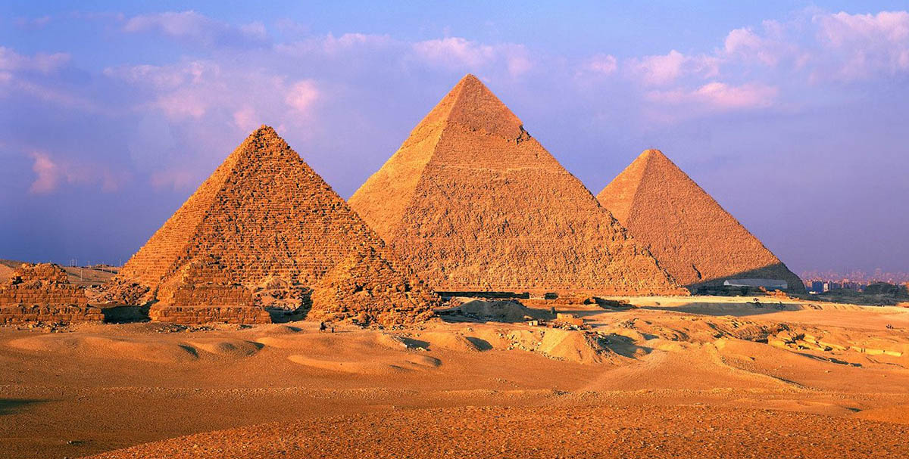
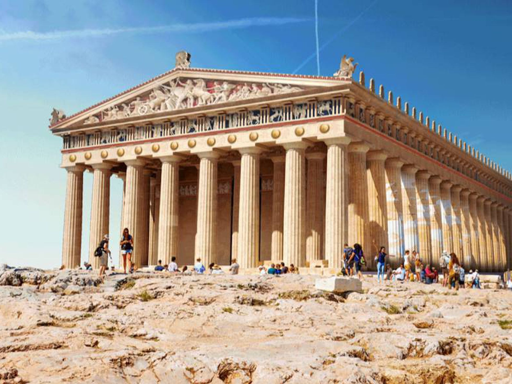

Los monumentos antiguos son estructuras arquitectónicas, esculturas o construcciones de importancia histórica y cultural que datan de épocas pasadas. Estos monumentos representan logros significativos de civilizaciones antiguas y son testigos mudos de la evolución de la arquitectura, el arte y la ingeniería a lo largo de la historia. Los monumentos antiguos a menudo tienen un valor simbólico y cultural profundo, y son considerados patrimonio cultural de la humanidad.
Estos monumentos pueden variar ampliamente en tamaño y propósito, desde las majestuosas pirámides de Egipto, que sirvieron como tumbas para faraones, hasta los templos antiguos de Grecia, que honraban a los dioses griegos. También pueden incluir obeliscos, arcos triunfales, murallas y esculturas que conmemoran eventos históricos. Muchos de estos monumentos antiguos han resistido la prueba del tiempo y se han convertido en destinos turísticos populares, atrayendo a visitantes de todo el mundo.
Explorar monumentos antiguos es una forma de conectarse con el pasado y apreciar la creatividad y la habilidad de las civilizaciones que los construyeron. A menudo, estos monumentos también plantean preguntas intrigantes sobre cómo se llevaron a cabo estas hazañas arquitectónicas en tiempos en los que la tecnología moderna no existía.
Las pirámides de Egipto son verdaderas maravillas arquitectónicas que se alzan majestuosamente en la meseta de Giza, cerca de El Cairo. Entre ellas, la Gran Pirámide de Giza, también conocida como la Pirámide de Keops, se destaca como una de las estructuras más icónicas y misteriosas del mundo antiguo. Estas pirámides, construidas hace miles de años, son un testimonio impresionante de la habilidad y la visión de la antigua civilización egipcia.
La Gran Pirámide de Giza fue construida como un mausoleo para el faraón Keops, y se cree que su construcción se llevó a cabo durante el Reino Antiguo de Egipto, alrededor del 2560 a.C. Con una altura original de aproximadamente 146 metros (480 pies), fue la estructura más alta hecha por el hombre durante casi 4,000 años. La precisión de su construcción es asombrosa: las caras de la pirámide están alineadas casi perfectamente con los puntos cardinales y sus bloques de piedra caliza, algunos de los cuales pesan varias toneladas, se cortaron y colocaron con una precisión milimétrica.
El método exacto utilizado para construir estas pirámides sigue siendo objeto de debate. Si bien hay varias teorías, se cree que los antiguos egipcios utilizaron rampas para elevar los enormes bloques de piedra a medida que construían las pirámides. A pesar de los avances en la egiptología y la arqueología, el proceso exacto de construcción de estas maravillas sigue siendo un misterio sin resolver.
Las pirámides de Egipto no solo son monumentos arquitectónicos, sino también símbolos culturales y religiosos de la antigua civilización egipcia. Se creía que las pirámides servían como tumbas para los faraones, que eran considerados dioses en la Tierra. Dentro de estas estructuras, se encontraban tesoros y artefactos funerarios destinados a acompañar a los faraones en su vida después de la muerte.

Hoy en día, las pirámides de Egipto atraen a millones de turistas de todo el mundo que quedan asombrados por su majestuosidad y su enigma. Además de la Gran Pirámide de Giza, también se encuentran otras pirámides notables en Giza, como la Pirámide de Kefrén y la Pirámide de Micerinos, que forman parte de un complejo funerario impresionante.
En resumen, las pirámides de Egipto son legados monumentales de una civilización antigua que perduran en el tiempo como testimonios de la grandeza y la destreza de los antiguos egipcios. Su construcción precisa, su significado cultural y su aura de misterio continúan cautivando a la humanidad y preservando la fascinante historia de Egipto.
El Partenón es un tesoro arquitectónico que se alza majestuosamente en la Acrópolis de Atenas, Grecia. Este templo dedicado a la diosa griega Atenea Parthenos es uno de los monumentos más famosos de la antigua Grecia y una obra maestra del estilo arquitectónico dórico.
Construido en el siglo V a.C., el Partenón es un ejemplo sobresaliente de la arquitectura clásica griega. Su diseño, atribuido al arquitecto Ictinos, presenta columnas dóricas esculpidas en mármol y un friso que representa escenas de la mitología griega, incluyendo la lucha de los dioses contra los Titanes. El Partenón encarna la perfección matemática y estética que caracteriza al arte griego clásico.
A lo largo de los siglos, el Partenón ha experimentado varias transformaciones. Inicialmente, funcionaba como un templo pagano dedicado a Atenea, la diosa de la sabiduría y la guerra. Luego, en la era cristiana, se convirtió en una iglesia cristiana, y durante la ocupación otomana, fue transformado en una mezquita. Durante la guerra greco-turca del siglo XVII, sufrió daños significativos cuando se utilizó como polvorín militar y fue parcialmente destruido en una explosión.

En el siglo XIX, el Partenón se convirtió en un símbolo del movimiento de independencia griega y atrajo la atención del mundo. Fue restaurado en gran parte por el arqueólogo y diplomático británico Lord Elgin, quien retiró muchas de las esculturas originales, conocidas como los "Mármoles de Elgin", que ahora se exhiben en el Museo Británico.
A pesar de su historia tumultuosa y los daños sufridos a lo largo de los años, el Partenón sigue siendo un testimonio imponente de la antigua Grecia y un punto culminante cultural y arquitectónico. Es una atracción turística importante en la actualidad y ha influido en la arquitectura de muchos edificios en todo el mundo.
El Partenón, con su elegante belleza y su profundo significado histórico, continúa asombrando a visitantes de todas partes y rindiendo homenaje a la rica herencia cultural de Grecia.